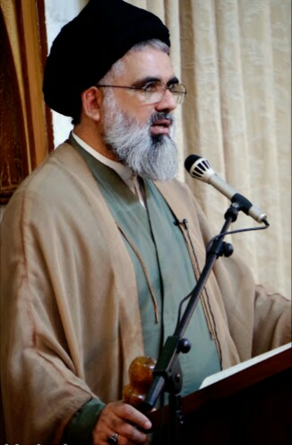

|  |
He is a staunch supporter of the Islamic Revolution of Iran.
He propagates the hard-line version of Wilayat-e-Fiqh.
| Works |
Dates |
Precede By |
| Principal of Jamia Urwa-tul-Wusqa |
2005–present |
Position established
|
| Head of Siraat Education Schooling System |
1989–present |
Mufti Jafar Hussain
|
| Principal of Jamia Jaffria |
1982–present |
Position established
|
Principal of Jamia Urwa-tul-Wusqa
2005–present
Preceded by Position established
|
Website: Islami Markaz
Syed Jawad Naqvi (Urdu: علامہ سید جواد نقوی; born 1952) is a Pakistani Twelver Shia cleric, religious leader and Quran interpreter.
He has studied islam in Iran for more than 3 decades. His most prominent teacher was Ayatollah Abdollah Javadi-Amoli.
Naqvi is the principal of Jamia Urwa-tul-Wusqa and Jamia Jaffria , seminaries in Lahore and Gujranwala respectively.
He is also the principal of Jamia Ummul Kitaab in Lahore, head of Deen-ul-Qayyim Online Islamic school and Siraat Education School System.
Naqvi is also the editor of the monthly magazine Masharab-e-Naab . He is a staunch supporter of the Islamic Revolution of Iran.
In many of his speeches he propagates the hard-line version of Wilayat-e-Fiqh
Link for more Information
Books and Teaching Services:
Naqvi has written many books on the Quran, Pan Islamic Unity, Karbala and Islam including:
Urdu:
- وحدت امّت مسلمه کا تاريخى مطالبه / Vaḥdat-i ummat Muslimah kā tārīk̲h̲ī mut̤ālabah, Islāmābād : Markaz-i Taḥqīqāt-i Islāmī Baʻs̲at, 2008, 213 p.
On the importance and need of unity in Islam; ummah (Islam)
- اقدار عاشورا / Aqdār-i ʻĀshūrā, Islāmābād : Matāb Pablīkeshanz, 2010, 381 p. On the eminence of Tenth of Muḥarram, role of Ḥusayn ibn ʻAlī,
d.680 in the Battle of Karbalāʼ, Iraq, 680.
- آداب فهم قرآن / Ādāb-i fahm-i Qurʼān, Lāhore : Matāb Pablīkeshanz, 2012-, multiple volumes. On the sciences of Qur'an.
-
فتنۀ آخرالزمان / Fitnah-yi Āk̲h̲iruzzamān, Islāmʹābād : Matāb Pablīkeshanz, 2013, 217 p. On different types of violences in Islam, according to Shi'as.
اسلام اور سيکولرازم / Islām aur sekūlarizm, Islāmābād : Matāb Pablīkeshanz, 2014, 207 p. Comparative study of Islam and Secularism.
- حسين ورث انبياء / Ḥusain varis̲-i Anbiyāʼ, Islāmābād : Markaz-i Taḥqīqāt-i Islāmī Baʻs̲at : Matāb Pablīkeshanz, 2012, 305 p.On the eminence of Ḥusayn ibn-i ʻAlī, d. 680 .
-
وحدت امّت : اسلام کا فراموششده رکن / Vaḥdat-i ummat : Islām kā farāmūshʹshudah rukan, Islāmābād : Markaz-i Taḥqīqāt-i Islāmī Baʻs̲at, 2013, 491 p.
On the importance and need of unity in Islam.
English:
- Defeated velvet revolution in Iran, Qom, Iran : Matab publications, 2009, 159 p.
- The Role of Women towards the System of Wilayat
Allegations and controversies:
- Views of Iran System:
Naqvi believes that Iran's system is based on Quran.[10][11] This is against the opinion of major Shia clerics of Iran.
- Views on Azadari:
In July 2020 Jawad Naqvi criticised Imamia Students Organisation for not being the pride of Guardianship of the Islamic Jurist which sparked a reaction and a resolution by Imamia Students Organization against him
-
Views on women's roles:
Syed Jawad Naqvi holds over all socially conservative views about women's roles. Qian says, Naqvi's views on women seems to have been influenced by South Asian conservative Islamic advise literature,
and overall he reiterates same views with only addition that he expects women's roles in his idealistic Islamic political revolution in Pakistan,
practice section
Sign Up for Registration